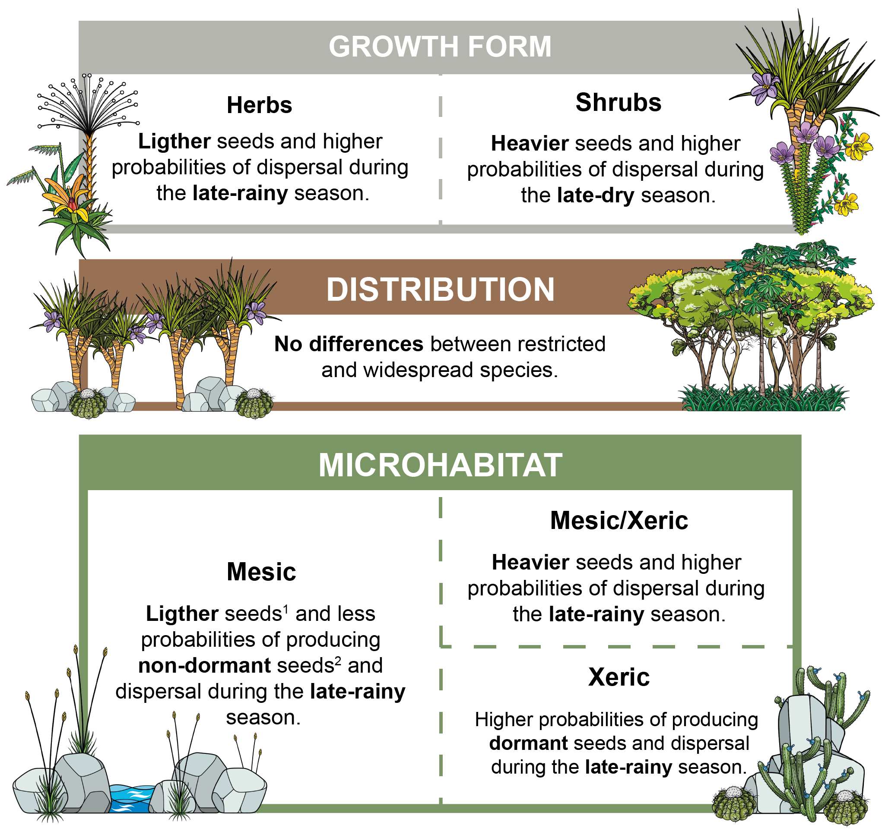
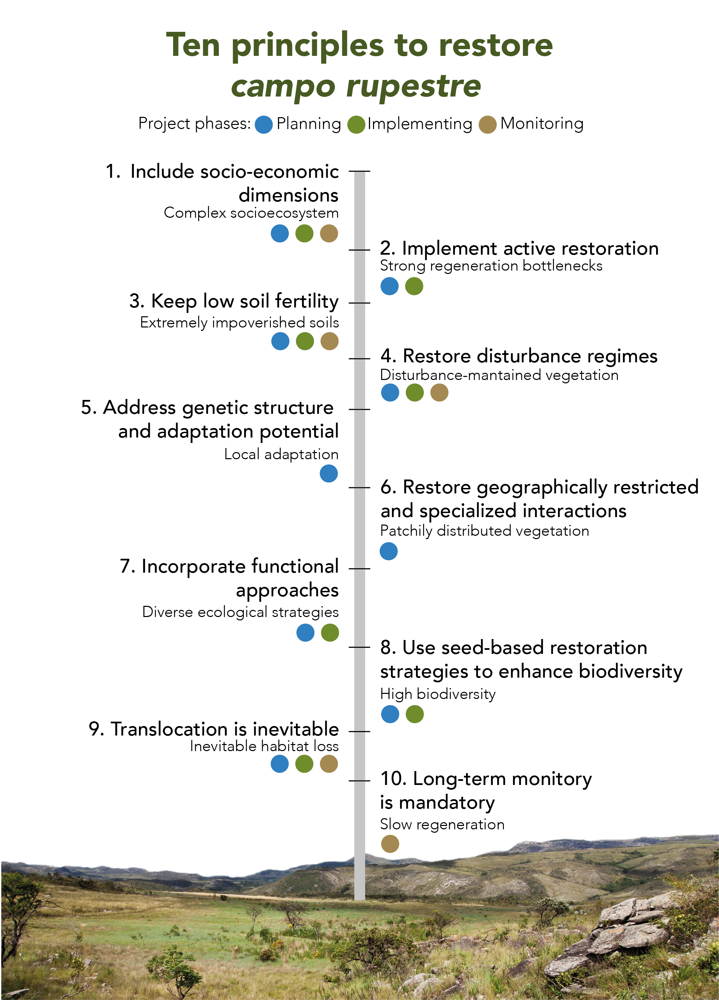
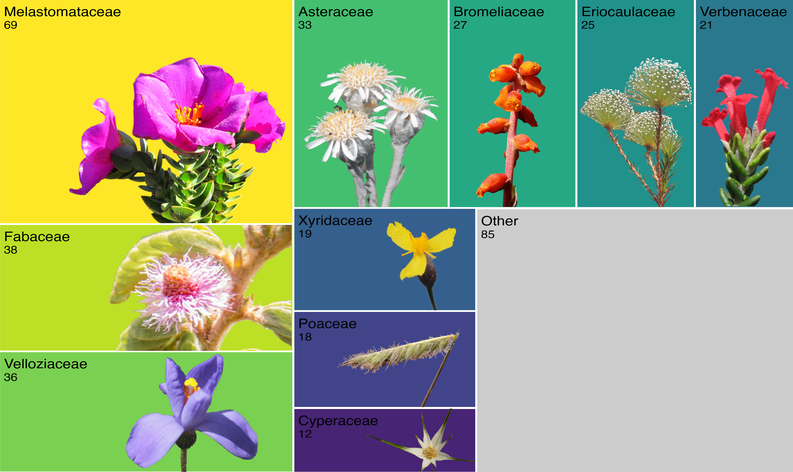
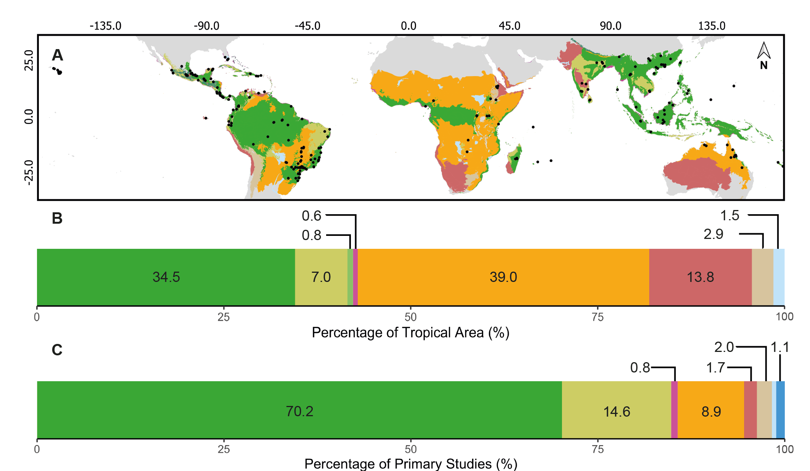
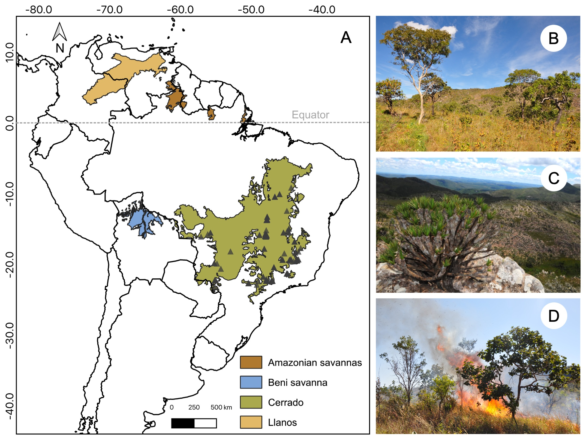

Here you will find an updated list of my publications. If you have problems accessing any of these, feel free to e-mail me or request a PDF through my ResearchGate profile!
Amaral-Garcia L, Ordóñez-Parra CA, Agostini K, Barbosa-Dias LG, Fidelis A, Maruyama PK, Medeiros NF, Senna N, Rossatto DR, Melo PHA et al. (2026) Cerrado plant traits (CPT): a database of functional traits across vegetation types in a global biodiversity hotspot. Annals of Botany, mcag176.
Dolabela BM, Costa FV, Castagneyrol B, Lourenço GM, Ordóñez-Parra CA, Valadão-Mendes L & Cornelissen TG (2026) The impact of urbanization on the functions supported by arthropods: a global meta-analysis. Journal of Biogeography, 53, e70278.
Oliveira DN, Ordóñez-Parra CA, Chen S-C, TSTD Consortium & Silveira FAO (2026) Tropical Seed Trait Database: advancing seed functional ecology in the world’s most biodiverse region. New Phytologist, 251, 945–958.
Nascimento B, Silva VHD, Ordóñez-Parra CA, Bosenbecker C, Bhakti T, Gomes IN, Valadão-Mendes LB, Boratto LC, Anselmo PA, de Amorim MD, Cornelissen TG, Pena JC & Maruyama PK (2025) Pollination and pest control in urban agriculture: a systematic review of the species associated with beneficial services. Urban Ecosystems, 28, 222.
Ávila AA, Pereira CC, de Oliveira CP, Ordóñez-Parra CA, Martins SG & de Castro GC (2025) Forgotten guardians of biodiversity in the Atlantic Forest: seed rain confirms the ecological role of hedgerows in landscape connectivity. Plant Ecology and Evolution, 158, 350–357.
Gomes IN, Silva VHD, Gonçalves RB, Ordóñez-Parra CA, Procópio-Santos CP, Queroz SO, Castro DMP, Pena JC & Maruyama PK (2025) Exploring the determinants of bee diversity in tropical urban areas and their implications for conservation. Landscape and Urban Planning, 263, 105440.
Faria FS, Ordóñez-Parra CA, Granata L, Resende LV & Silveira FAO (2024) Low-cost technology supports propagation of endemic species from a global biodiversity hotspot. Restoration Ecology, e70005.
Ordóñez-Parra CA, Medeiros NF, Dayrell RLC, Le Stradic S, Negreiros D, Cornelissen T & Silveira FAO (2024) Seed functional ecology in Brazilian rock outcrop vegetation: an integrative synthesis. Annals of Botany, mcae160.

Reginato M†, Ordóñez-Parra CA†, Messeder JVS, Brito VLG, Dellinger A, Kriebel R, … & Silveira FAO (2024) MelastomaTRAITs 1.0: a database of functional traits in Melastomataceae, a large pantropical Angiosperm family. Ecology, 105(6), e4308. († Co-first authors)
Medeiros NF, Ordóñez‐Parra CA, Buisson E & Silveira FAO (2024). Systematic review of field research reveals critical shortfalls for restoration of tropical grassy biomes. Journal of Applied Ecology, 61(6), 1174-1186.
Silveira FAO, Fuzessy L, Phartyal SS, Dayrell RLC, Vandelook F, Vázquez-Ramírez J, … & Saatkamp A (2024) Overcoming major barriers in seed ecology research in developing countries. Seed Science Research, 33(3), 172 - 181.
Arruda AJ, Medeiros NF, Fiorini CF, Ordóñez-Parra CA, Dayrell RLC, Messeder JVS, … & Silveira FAO (2023) Ten principles for restoring campo rupestre, a threatened tropical, megadiverse, nutrient-impoverished montane grassland. Restoration Ecology, e13924.

Ordóñez‐Parra CA, Dayrell RLC, Negreiros D, Andrade AC, Andrade LG, Antonini Y, … & Silveira FAO (2022). Rock n’ Seeds: A database of seed functional traits and germination experiments from Brazilian rock outcrop vegetation. Ecology, 104(1), e3852.

Toone TA, Ahler SJ, Larson JE, Luong JC, Martínez‐Baena F, Ordóñez‐Parra CA, … & van der Ouderaa IB (2022). Inclusive restoration: Ten recommendations to support LGBTQ+ researchers in restoration science. Restoration Ecology, 31(3) e13743.
Silveira FAO, Ordóñez‐Parra CA, Moura LC, Schmidt IB, Andersen AN, Bond W, … & Pennington RT (2022). Biome Awareness Disparity is BAD for tropical ecosystem conservation and restoration. Journal of Applied Ecology, 59(8), 1967-1975.

Silveira FAO, Ordóñez-Parra CA & Dayrell RLC (2024). Ecologia funcional da germinação de sementes. In: Borghetti F, ed. Germinação: princípios, processos e aplicações. Rede de Sementes do Cerrado, 251–270.
Fidelis, AT, Ordóñez-Parra CA, Silveira FAO, Dayrell RLC, & López-Mársico L (2024). Germinação e recrutamento em ecossistemas campestres: campos rupestres, campos de altitude e Pampa. In: Borghetti F, ed. Germinação: princípios, processos e aplicações. Rede de Sementes do Cerrado, 271–296.
Ordóñez-Parra CA, Messeder JVS, Mancipe-Murillo C, Calderón-Hernández M, & Silveira FAO (2022). Seed Germination Ecology in Neotropical Melastomataceae: Past, Present, and Future. In: Goldenberg R, Michelangeli FA, Almeda F, eds. Systematics, Evolution, and Ecology of Melastomataceae. Springer, Cham., 707-733.
Daibes LF, Ordóñez-Parra CA, Dayrell RLC, Silveira FAO (2022). Regeneration from seeds in South American savannas, in particular the Brazilian Cerrado In: Baskin CC, Baskin JM, eds. Plant Regeneration from Seeds. Elsevier, 183–197.

Basto S, Ordóñez-Parra CA, Contreras S, Díaz Ariza LA, Acero Nitola AM, … Barrera-Cataño JI (2018). Capítulo 1. Bosque Altoandino. In: Basto S, Moreno AC, Barrera-Cataño JI, eds. Restauración ecológica en áreas post-tala de especies exóticas en el Parque Forestal Embalse del Neusa. Pontificia Universidad Javeriana & Corporación Autónoma Regional de Cundinamarca - CAR, 27-54.
Tulande E, Moreno AC, Contreras S, Roa-Fuentes LL, Ordóñez-Parra CA, .. Basto S (2018). Capítulo 5. Monitoreo a las trayectorias sucesional en áreas post talas del PFEN. In: Basto S. Moreno AC, Barrera-Cataño JI, eds. Restauración ecológica en áreas post-tala de especies exóticas en el Parque Forestal Embalse del Neusa. Pontificia Universidad Javeriana & Corporación Autónoma Regional de Cundinamarca - CAR, 103-152.
Barrera-Cataño JI, Moreno AC, Contreras S, Ordóñez-Parra CA, Díaz Ariza LA, … Basto S (2018). Capítulo 6. Estrategias de restauración ecológica para zonas post-tala en el PFEN. In: Basto S. Moreno AC, Barrera-Cataño JI, eds. Restauración ecológica en áreas post-tala de especies exóticas en el Parque Forestal Embalse del Neusa. Pontificia Universidad Javeriana & Corporación Autónoma Regional de Cundinamarca - CAR, 155-182.
Basto S, Ordóñez-Parra, CA, Roa-Fuentes, LL, Castillo-Díaz, D, Rivera-Díaz A (2018). Semillas: ¿promueven o limitan la restauración ecológica? In: Pinzón-García P, Aguilar-Garavito M, Quijano M, Sierra J, Rubio JA, eds. Restauración Ecológica en Colombia: un compromiso de país. Red Colombiana de Restauración Ecológica & Universidad Católica de Oriente, 357-384.